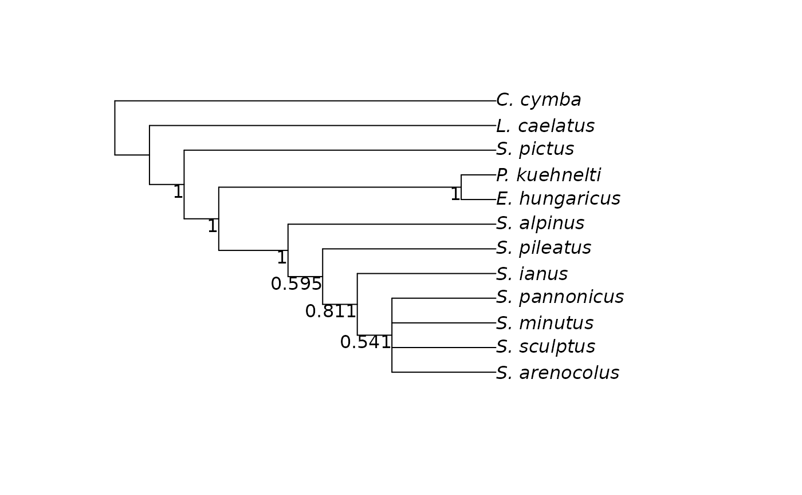
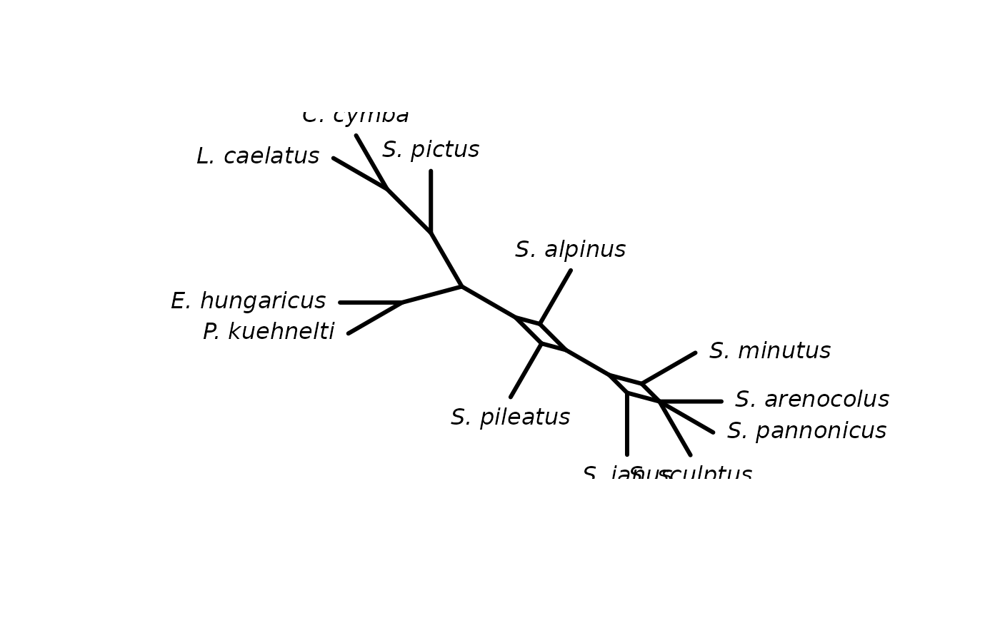

Matrix for morphological characters and character states for 12 species of mites. See vignette '02_Phylogenetic trees from morphological data' for examples to import morphological data.
References
Schäffer, S., Pfingstl, T., Koblmüller, S., Winkler, K. A., Sturmbauer, C., & Krisper, G. (2010). Phylogenetic analysis of European Scutovertex mites (Acari, Oribatida, Scutoverticidae) reveals paraphyly and cryptic diversity: a molecular genetic and morphological approach. Molecular Phylogenetics and Evolution, 55(2), 677–688.
Examples
data(mites)
mites
#> 12 sequences with 79 character and 53 different site patterns.
#> The states are 0 1 2 3 4 5 6 7
# infer all maximum parsimony trees
trees <- bab(mites)
#> Compute starting tree
#> lower bound: 106
#> upper bound: 139
#> Search Baumraum (tree space)
#>
|
| | 0%
|
|= | 1%
|
|= | 2%
|
|== | 3%
|
|=== | 4%
|
|=== | 5%
|
|==== | 6%
|
|===== | 7%
|
|===== | 8%
|
|====== | 9%
|
|======= | 10%
|
|======== | 11%
|
|========= | 12%
|
|========= | 13%
|
|========== | 14%
|
|=========== | 15%
|
|=========== | 16%
|
|============ | 17%
|
|============= | 18%
|
|============= | 19%
|
|============== | 20%
|
|=============== | 21%
|
|=============== | 22%
|
|================ | 23%
|
|================= | 24%
|
|================= | 25%
|
|================== | 26%
|
|=================== | 27%
|
|=================== | 28%
|
|==================== | 29%
|
|===================== | 30%
|
|====================== | 31%
|
|======================= | 32%
|
|======================= | 33%
|
|======================== | 34%
|
|========================= | 35%
|
|========================= | 36%
|
|========================== | 37%
|
|=========================== | 38%
|
|=========================== | 39%
|
|============================ | 40%
|
|============================= | 41%
|
|============================= | 42%
|
|============================== | 43%
|
|=============================== | 44%
|
|=============================== | 45%
|
|================================ | 46%
|
|================================= | 47%
|
|================================= | 48%
|
|================================== | 49%
|
|=================================== | 50%
|
|==================================== | 51%
|
|===================================== | 52%
|
|===================================== | 53%
|
|====================================== | 54%
|
|======================================= | 55%
|
|======================================= | 56%
|
|======================================== | 57%
|
|========================================= | 58%
|
|========================================= | 59%
|
|========================================== | 60%
|
|=========================================== | 61%
|
|=========================================== | 62%
|
|============================================ | 63%
|
|============================================= | 64%
|
|============================================= | 65%
|
|============================================== | 66%
|
|=============================================== | 67%
|
|=============================================== | 68%
|
|================================================ | 69%
|
|================================================= | 70%
|
|================================================== | 71%
|
|=================================================== | 72%
|
|=================================================== | 73%
|
|==================================================== | 74%
|
|===================================================== | 75%
|
|===================================================== | 76%
|
|====================================================== | 77%
|
|======================================================= | 78%
|
|======================================================= | 79%
|
|======================================================== | 80%
|
|========================================================= | 81%
|
|========================================================= | 82%
|
|========================================================== | 83%
|
|=========================================================== | 84%
|
|=========================================================== | 85%
|
|============================================================ | 86%
|
|============================================================= | 87%
|
|============================================================= | 88%
|
|============================================================== | 89%
|
|=============================================================== | 90%
|
|================================================================ | 91%
|
|================================================================= | 92%
|
|================================================================= | 93%
|
|================================================================== | 94%
|
|=================================================================== | 95%
|
|=================================================================== | 96%
|
|==================================================================== | 97%
|
|===================================================================== | 98%
|
|===================================================================== | 99%
|
|======================================================================| 100% [1] 0 0 0 3 15 105 514 467 168 266 74 0
#>
# For larger data sets you might use pratchet instead bab
# trees <- pratchet(mites, minit=200, trace=0, all=TRUE)
# build consensus tree
ctree <- root(consensus(trees, p=.5), outgroup = "C._cymba",
resolve.root=TRUE, edgelabel=TRUE)
plotBS(ctree, trees)

cnet <- consensusNet(trees)
plot(cnet)
